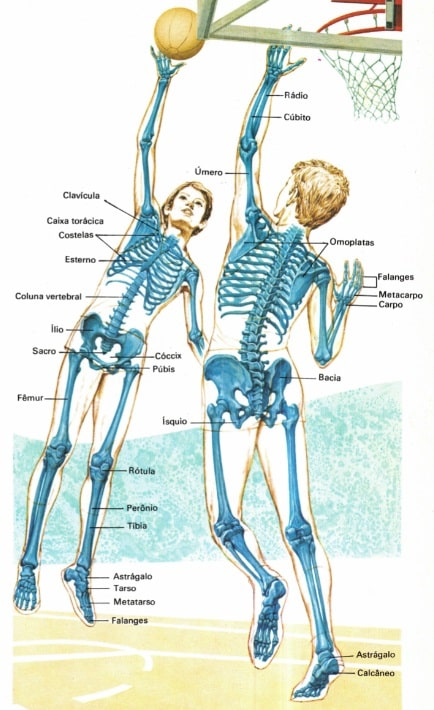
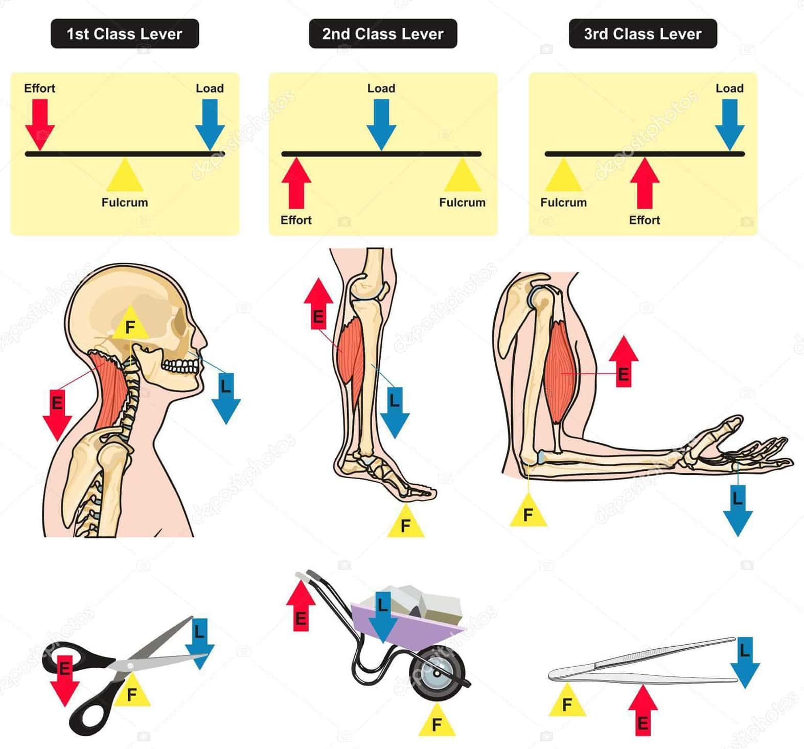
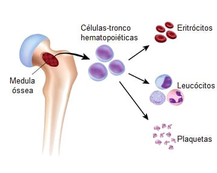
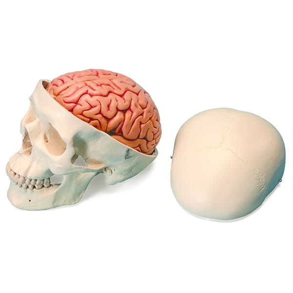

Osteologia, em sentido restrito é etimologicamente, o estudo dos ossos articulados ou individualmente.
Em sentido mais amplo inclui o estudo das formações intimamente ligadas ou relacionadas com os ossos, com eles formando um todo: o esqueleto.
Este, a julgar pelo emprego rotineiro do termo, poderia significar a simples reunião dos ossos, mas na realidade transcende este sentido significando “arcabouço” (daí esqueleto fibroso do coração, esqueleto cartilagíneo, etc.).
Assim sendo, podemos definir o esqueleto como o conjunto de ossos e cartilagens que se interligam para formar o arcabouço do corpo do animal e desempenhar várias funções.
Por sua vez os ossos são definidos como peças rijas, vivas, que em conjunto, constituem o esqueleto.

Funções do esqueleto
Como funções importantes para o esqueleto, podemos apontar:
Proteção (para órgãos como o coração, pulmões e sistema nervoso central);
Rigidez e forma do corpo;
Local de armazenamento de íons Ca+ e K (durante a gravidez a calcificação fetal se faz, em grande parte, pela reabsorção destes elementos armazenados no organismo materno);

Sistema de alavancas que movimentadas pelos músculos permitem os deslocamentos do corpo, no todo ou em parte e, finalmente;
Hematopoiese/hematopoese (produção de certas células do sangue).


Divisão do esqueleto
O esqueleto pode ser dividido em duas grandes porções.
Uma mediana, formando o eixo do corpo, e composta pelos ossos da cabeça, pescoço e tronco (tórax e abdome): é o esqueleto axial (em azul na imagem).
Outra, “pendurada” a esta, forma os membros e constitui o esqueleto apendicular (em amarelo na imagem).
A união entre estas duas porções se faz por meio de cinturas:
Escapular (ou torácica, constituída pela escápula e clavícula) e pélvica constituída pelos ossos do quadril (coxais).
Número de ossos
No indivíduo adulto, idade na qual se considera completado o desenvolvimento orgânico, o número de ossos é de 206.
Para efetuarmos a contagem, vamos novamente dividir o esqueleto em axial e apendicular.
O esqueleto axial (do latim axis = eixo) é formado pelos ossos que estão no eixo do corpo, com um total de 80 ossos.
O esqueleto apendicular (apêndice, do latim appendix = o que pende), forma o esqueleto dos membros superiores e inferiores, com um total de 126 ossos.
Este número, todavia, varia, se levarmos em consideração os seguintes fatores:
A) Fatores etários — Do nascimento à senilidade há uma diminuição do número de ossos.
Isto se deve ao fato de que, certos ossos, no recém-nascido, são formados de partes ósseas que se soldam durante o desenvolvimento do indivíduo para constituir um osso único no adulto.
Assim, o osso frontal é formado por duas porções, separado no plano mediano.
B) Fatores individuais — Em alguns indivíduos pode haver persistência da divisão do osso frontal no adulto e ossos extranumerários podem ocorrer, determinando variação no número de ossos.
C) Critérios de contagem — Os anatomistas utilizam às vezes critérios muito pessoais para fazer a contagem do número de ossos do esqueleto e isto explica a divergência de resultados quando os comparamos.
Assim, os ossos chamados sesamóides (inclusos em tendões musculares) são computados ou não na contagem global, segundo o autor.
O mesmo para os ossículos da audição, localizados na orelha média, as vezes contados e outras vezes não.
Como também para os ossos da pelve, que apesar de serem nomeados em 3 estruturas (íleo, ísquio e púbis), são contabilizados como apenas 1 osso, ou seja, apenas pelve.